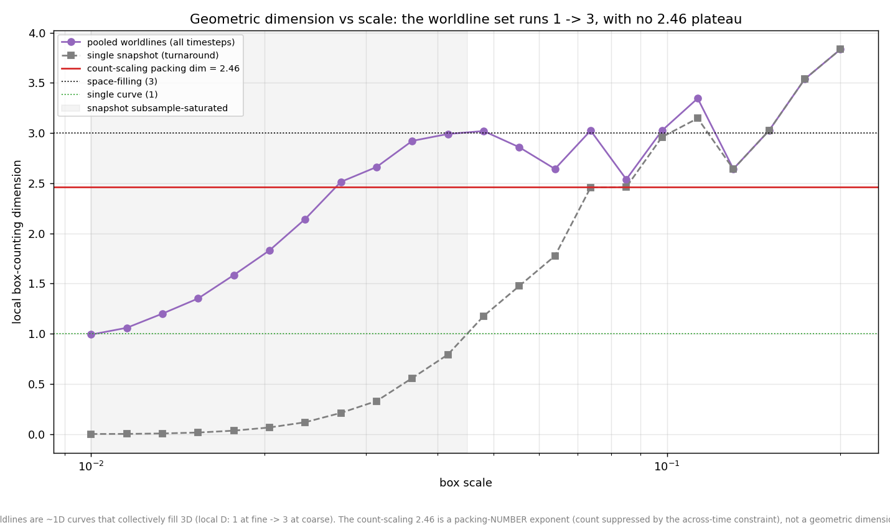
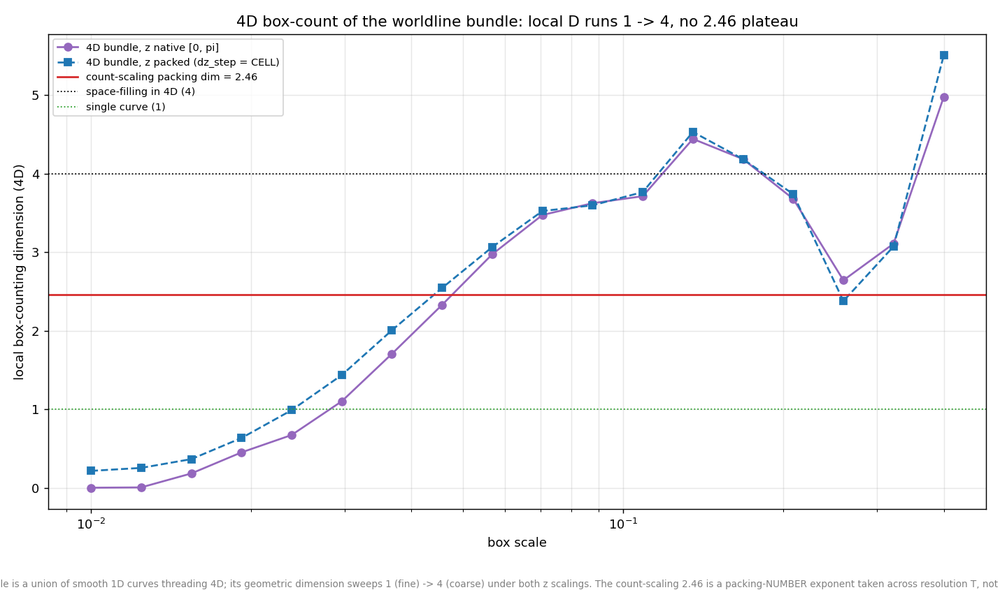
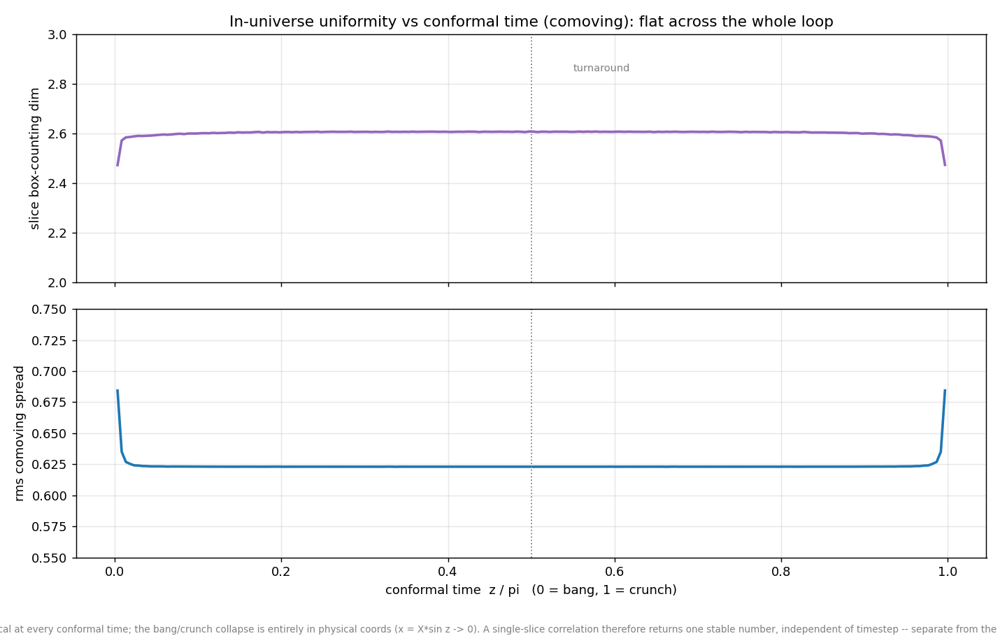

The packing engine excludes overlapping worldlines using a distance test.
By default that test is a Chebyshev cube (an axis-aligned L∞ box);
the “euclid” variant swaps it for an L2 sphere. The question:
does the shape of the exclusion region change the packing dimension?
This chart holds each estimator (and its probe) fixed and varies only the
collision geometry the data was generated with — the honest
apples-to-apples test.
Correlation D2 (L2 probe) and box-counting D0 (cube cells), each measured
on cube-collision and sphere-collision dumps, seed-averaged vs resolution
T (3+1). The probe is held fixed (correlation = L2 ball, box-counting =
cube cells); only the generation collision shape varies. Solid =
cube-generated, dashed = sphere-generated. Shaded band = low T where the
packing cell intrudes on the fit window.
Result: collision geometry does not matter. Converged
over T ≥ 100:
Both differences are well inside the seed error bars; the solid and dashed
curves are visually indistinguishable above the shaded band. The ~0.11
gap that remains is between the two estimators (D2 vs D0 of a
mildly multifractal object) — a q-moment effect, not a collision-shape
effect. Correlation converges from above and box-counting from below, so
they sandwich the D ≈ 2.79 line. This closes the loop: switching the
packing exclusion from cubes to spheres leaves the dimension unchanged.
Boundary handling: the sphere/cube gap is an edge artifact — and a wrapped-measurement preview
Investigation prompted by a question on the correlation numbers ·
code
494940e
The correlation dimension was reported two ways — a sphere (L2) probe
giving D2 ≈ 2.79 and a cube (L∞) probe giving ≈ 2.71.
Digging into why they differ turned up something more basic: the standard
C(r) = pairs-within-r / all-pairs estimator silently assumes the
sample is either periodic or edge-corrected, and our packing is
neither — the engine treats |X| = 1 as a hard
wall and an edge-weighted sampler piles density right against it. So every
boundary point is missing the neighbors that would sit outside the box,
which suppresses C(r) at larger r and drags the fitted slope down.
Two controls nail it. On a uniform cloud whose true dimension is exactly 3,
the naive estimator returns 2.87 (sphere) / 2.82 (cube) — both wrong, split
by ~0.045 — purely from the boundary. Removing the boundary (interior-only
centers, or periodic wrapping) restores 3.00 for both probes, gap
→ 0. So the sphere/cube difference is a finite-window edge
artifact, not structure: the dimension of a set does not depend on the
shape of the ruler once the boundary is handled.
As a preview of the estimator we'll use once a genuinely periodic space
exists, we ran the wrapped (toroidal minimum-image) correlation dimension
on the current data:
Wrapped correlation dimension D2 vs T (3+1), sphere and cube probes,
seed-averaged. Both converge onto the space-filling D = 3 line, on top of
each other (gap ~0.01), while the non-periodic reference sits at 2.79.
Caveat, loudly: this wrapped measurement is run on the
hard-wall packing, which is not periodic. Because the sampler
stacks density on both walls, wrapping glues those sheets together and
invents spurious cross-seam pairs that homogenize the cloud — which is why
the wrapped value (2.997) sits almost exactly on the uniform control
(3.000). So the 3.0 here is not the packing's real dimension;
it is a method preview. The takeaway that is solid: the 2.79/2.71
split and the sub-3 value were boundary effects, and the true dimension is
still bracketed and pending a boundary-controlled measurement (edge-corrected
on the bounded model, or wrapped on a genuinely periodic one).
The direct packing dimension: jam-count scaling gives D ≈ 2.46 (3+1)
Chris: the packing dimension is the growth of the jam across
total-timestep counts, not a single-slice measure · code
9d64007
The packing dimension we actually care about is how the jammed worldline
count grows with resolution: a 20-step universe and a 200-step universe
jam at very different counts, and the slope of log N_sat vs
log T is D. This is the direct measurement — no snapshot, no
boundary, no probe. Fitted across the T-ladder (weighted log-log slope +
seed bootstrap):
3+1: D = 2.45 ± 0.00 (full ladder), 2.47 for T ≥ 100
2+1: D = 1.58 ± 0.00
Jam count N_sat vs total resolution T (log-log), 3+1 at both stopping
cutoffs and 2+1, with T² / T³ reference guides. Lower panel: local slope
vs T — flat, confirming a clean power law.
Three things make this solid: it's a clean power law (the
local slope is flat across the ladder — low-T half and high-T half both
≈ 2.46, the scatter is just seed noise, no crossover), it's
cutoff-robust (1e-7 vs 1e-6 move D by < 0.02), and it
reproduces the original nvt analysis (~2.50). D < 3 is
the cost of the joint across-time exclusion: pure spatial packing would give
T³, but avoiding every other worldline at every timestep suppresses it to
~T².⁴⁶.
The reconciliation: the long-standing 2.79 headline was
always the correlation dimension (a single-slice measure), never
this count scaling. The direct packing dimension is ≈ 2.46, and the various
estimates do not agree — count 2.46, box-counting 2.65, correlation
2.79 (boundary-biased) / ~3.0 (boundary-free). They span 2.46 → 3.0 because
they measure genuinely different things; the count scaling is the direct,
robust one. Whether the geometry of the correct (spacetime, across-timestep)
object agrees with the count's 2.46 is the open cross-check.
Does the geometry give 2.46? No — packing-number ≠ geometric dimension
Cross-check of Chris's question: should the count and a correlation
measure agree? · code
771e8a1
The count scaling gives the packing dimension cleanly (≈ 2.46). The open
question was whether a geometric measure of the correct object —
the worldlines across all timesteps, not one slice — recovers the same
number. We reconstructed every accepted worldline's comoving trajectory
from its dump parameters (no regeneration), pooled all timesteps into one
~12M-point cloud, and measured box-counting dimension as a function of
scale.

Local box-counting dimension vs box scale, seed-averaged (T=200). The
pooled worldline cloud (purple) runs from D ≈ 1 at the finest scale to
D ≈ 3 at coarse scales; it crosses the count-scaling 2.46 (red) only in
passing, with no plateau. The snapshot (grey) saturates below ~0.05
because the dump is subsampled to 60k points.
Answer: they are genuinely different quantities here. The
pooled worldlines are a union of smooth 1D curves that collectively
fill 3D, so the geometric dimension runs 1 → 3 with resolution — there is no
scale at which it is cleanly 2.46. The count-scaling 2.46 is a
packing-number exponent: how many worldlines fit vs the
exclusion size. For a set of points, packing number and box
dimension coincide (which is why the intuition says they should match) — but
the objects here are extended worldlines under a joint across-time
constraint, and for a curve packing the two need not agree.
Physically: the spatial arrangement is ~uniform (geometric D → 3), so the
count coming out below T³ is not spatial clustering — it is
the across-time exclusion suppressing how many worldlines can be threaded
through all timesteps at once. So 2.46 measures the dynamical cost
of the joint constraint, and it is well-defined as a count exponent even
though no static cloud has that as its geometric dimension.
4D box-count (time as a spatial axis) & in-universe uniformity over time
Two of Chris's questions: analyse the bundle with 4D boxes since time is
spatial, and characterise the uniformity distribution over time within
one universe (not across total-T) · code
0ed40ef
The 4D box-count sharpens the cross-check — and reframes it
The earlier spacetime cross-check pooled the timesteps into a 3D
cloud, dropping the time coordinate. Chris's point is right: these are 4D
waves with conformal time spatial, so the honest object is the full
(x, y, w, z) bundle. We box-count it in 4D under two time-axis
scalings: native (z on its real [0, π] range) and
packed (z rescaled so one timestep equals one exclusion
cell, dz_step = CELL = 2/T — an isotropic 4D collision cell).

Local 4D box-counting dimension vs box scale, seed-averaged (T=200), for
the native and cell-packed time scalings. Both sweep from D ≈ 1 at
the finest scale (resolving individual worldline curves) up to D ≈ 4
at coarse scales (space-filling in 4D), crossing the count-scaling 2.46
(red) only in passing. The coarse-scale wiggle above ~0.1 is small-count
noise (few occupied boxes).
Same answer as the 3D projection, now confirmed in full 4D: no 2.46
plateau. The worldline bundle is a union of smooth 1D curves
threading 4D spacetime — at the cell scale only 0.75% of the 4D
cells are occupied, so it is a thin near-1D set, not a solid. Its
geometric dimension therefore runs 1 → 4 with scale and has no
special value at 2.46.
But the 4D framing states the reconciliation more cleanly than before. The
count exponent is a box-counting dimension — just taken
along a different axis. Within one fixed universe, boxing the static bundle
gives its geometric dimension (1 → 4). Across the family of
universes, with the box tied to the exclusion cell (CELL = 2/T shrinking as
you refine), the occupied-object count grows as T².⁴⁶. Same box-counting
operation, different axis of refinement — exactly the two things Chris
kept separating: within-universe geometry vs across-resolution packing.
In-universe uniformity over time is flat
The second question fixes a single universe (one total-T) and asks how the
spatial slice changes from bang, through turnaround, to crunch. For each
timestep we reconstruct the comoving positions and measure the slice's rms
spread and its coarse box-counting dimension.

Per-slice comoving box-dimension (top) and rms spread (bottom) vs conformal
time z/π, seed-averaged (T=200). Both are flat across essentially the
whole loop — box-dim ≈ 2.61, spread ≈ 0.623 — with
deviations only in the last ~2% at each end (box-dim dips to ~2.47, spread
rises to ~0.68).
The comoving slices are statistically identical at every conformal
time. This is the key point for Chris's worry that the correlation
“just measures how uniform it is”: in comoving coordinates there
is nothing to vary — every timestep looks like a ~2.6-dimensional
packing of the same spread, so a single-slice correlation returns one stable
number no matter which slice you sample. The dramatic bang/crunch collapse
lives entirely in physical coordinates
(x = X·sin z → 0 at the endpoints); the comoving
packing that the exclusion actually acts on does not collapse. And this is a
separate phenomenon from the low-total-T jam that saturates near 2D
— that one is across-universe, this one is within-universe, and they
should not be conflated.